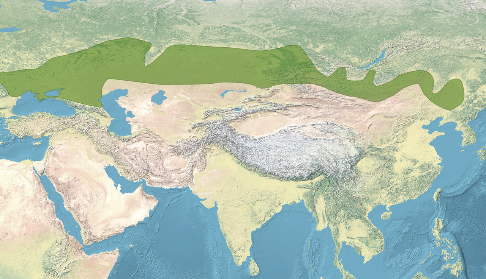
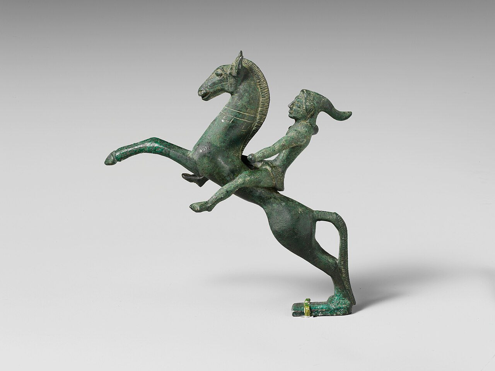
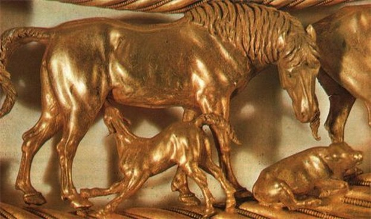
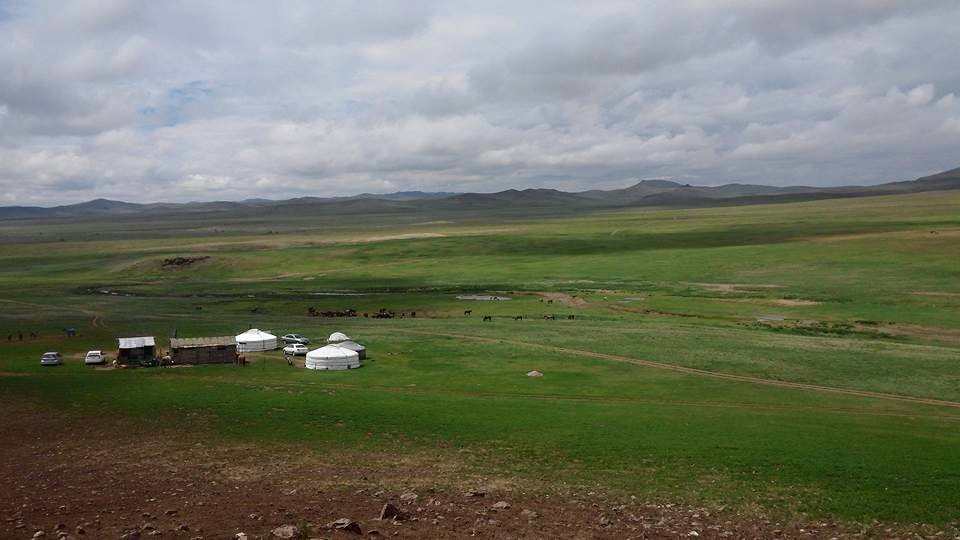

1. Η Αχανής «Λεωφόρος» της Χλόης: Η Γεωγραφία της Ευρασιατικής Στέπας
Στο προηγούμενο μάθημα παρακολουθήσαμε την «αποκοτιά» της Γεωργικής Επανάστασης —τη στιγμή που ο άνθρωπος ρίζωσε στο χώμα, έχτισε τείχη, αποθήκες και πόλεις, αποδεχόμενος τον ζυγό του καθημερινού μόχθου. Όμως η ανθρωπότητα δεν ακολούθησε μονοσήμαντα αυτόν τον δρόμο. Την ίδια ακριβώς εποχή, ένας άλλος κόσμος επέλεξε μια διαμετρικά αντίθετη μοίρα: απέρριψε την πόλη, αρνήθηκε το άροτρο και διάλεξε την απόλυτη ελευθερία πάνω στη ράχη του αλόγου. Ήταν ο κόσμος των ευρασιατικών στεπών.
Παιδιά του νερού, Αφρικανοί στην καταγωγή: Όπως διαισθάνθηκαν οι Ίωνες φυσικοί φιλόσοφοι και επιβεβαίωσε η σύγχρονη επιστήμη, η ζωή γεννήθηκε στο νερό. Η χαρτογράφηση του ανθρώπινου DNA το 2000 απέδειξε ότι το είδος μας ξεκίνησε από την Αφρική πριν από ~4 εκατομμύρια χρόνια («δηλαδή χθες!») με αρχικά μαύρο δέρμα.
Η «Αγία Τριάδα» της Ευρασίας-Αφρικής και η κινούμενη Γη: Η Ευρώπη, η Ασία και η Αφρική αποτελούν στην πραγματικότητα μία ενιαία γεωγραφική ενότητα («Πατήρ, Υιός και Άγιο Πνεύμα, τρία σε ένα!»). Πάνω στις τεκτονικές πλάκες της πάλαι ποτέ Παγγαίας, τίποτα δεν μένει ακίνητο: η ινδική πλάκα πιέζει προς βορρά ψηλώνοντας κάθε χρόνο τα Ιμαλάια κατά λίγα χιλιοστά, η μυτερή Καρπασία της Κύπρου μαρτυρά το σημείο απ' όπου αποκολλήθηκε από τη «μασχάλη» της νότιας Μικράς Ασίας, η Αυστραλία ταξιδεύει νοτιοανατολικά, και η Κρήτη, «καλοτάξιδο καράβι», κινείται μερικά χιλιοστά τον χρόνο δυτικά-νοτιοδυτικά, «κατά Λιβύη μεριά»!
Από τον Τροφοσυλλέκτη στη Γεωργική Επανάσταση — Το Βουβό Έπος:
- Το βουβό έπος της βοτανολογίας: Για εκατομμύρια χρόνια, ο άνθρωπος ως τροφοσυλλέκτης έπρεπε να ξεχωρίσει ποια από τα εκατομμύρια φυτικά είδη της γης είναι βρώσιμα και ποια δηλητηριώδη. Ένα ακατάγραφο έπος θυσίας: κάποιοι δοκίμασαν έναν καρπό, ο ένας τυφλώθηκε, ο άλλος τρελάθηκε, ο τρίτος πέθανε, μέχρι η ομάδα να καταλήξει στις ελάχιστες χιλιάδες φυτών που τρώμε σήμερα!
- Ρώμη vs Αντοχή & οι «αταβιστικές καταγραφές»: Καθώς ο άνθρωπος γίνεται συστηματικός κυνηγός (εδώ και τουλάχιστον 100.000 χρόνια), τα δύο φύλα συμπληρώνουν το ένα το άλλο: ο άνδρας διαθέτει ρώμη, η γυναίκα αντοχή (τα αρχαία γυναικεία οστά παρουσιάζουν τεράστια έλλειψη ασβεστίου λόγω του πολυετούς θηλασμού). Το κυνήγι σε μεγάλες αποστάσεις εκπαίδευσε διαφορετικά τον ανδρικό εγκέφαλο, αφήνοντας βαθιές αταβιστικές καταγραφές: την αίσθηση προσανατολισμού στον μακρύ ορίζοντα, την έλξη προς τον κίνδυνο και τη λατρεία της στρατηγικής!
- Η γυναίκα ως μητέρα της Γεωργικής Επανάστασης (~15.000–10.000 π.Χ.): Επειδή οι γυναίκες παρέμεναν λιγότερο κινητικές γύρω από τη βάση της ομάδας φροντίζοντας τα παιδιά, παρατήρησαν επί χιλιετίες τον κύκλο του σπόρου που πέφτει στο χώμα, ποτίζεται και βγάζει νέο φύτρο. Εκείνες πιστώνονται κατά πάσα πιθανότητα το μεγαλύτερο άλμα στην ιστορία του είδους μας: την εξημέρωση των φυτών.
Το λιώσιμο των πάγων (+140 μ.) και η μνήμη του Κατακλυσμού: Μεταξύ 50.000 και 20.000 π.Χ., το τέλος της τελευταίας Παγετώδους Περιόδου έλιωσε τους πάγους, ανυψώνοντας τη στάθμη των θαλασσών κατά 140 ολόκληρα μέτρα! Ο πλανήτης μετατράπηκε σε έναν απέραντο βούρκο. Αυτή η γεωλογική κόλαση αποτυπώθηκε στη συλλογική μνήμη ως «Κατακλυσμός»: χιλιετίες πριν από τον Νώε και τον Δευκαλίωνα, οι Σουμέριοι κατέγραψαν στην πινακίδα της Νιππούρ τον κατακλυσμό του βασιλιά Ζιουσούντρα, τον οποίο έσωσε σε κιβωτό ο θεός Ένκι!
Το αρχαιολογικό σοκ του Γκεμπεκλί Τεπέ (10.500 π.Χ.): Στη νοτιοανατολική Τουρκία (κοντά στα σύνορα με τη Συρία), ένα κατσίκι Κούρδου βοσκού οδήγησε στην αποκάλυψη του Göbekli Tepe («Λοφάκι»). Ένα μνημειακό σύμπλεγμα κυκλικών πέτρινων ναών του 10.500 π.Χ. —9.000 χρόνια παλαιότερο από τις Μυκήνες και 6.500 χρόνια πριν από το Στόουνχεντζ!— που «έσπασε όλα τα ταμεία» και απέδειξε ότι η μετάβαση στην εδραία ζωή στη Μεσοποταμία ξεκίνησε πολύ νωρίτερα απ' όσο πιστεύαμε.
Οι γεωγραφικές ζώνες της τροφής: Η Γεωργική Επανάσταση γεννήθηκε ανεξάρτητα στην Εύκρατη Ζώνη, αξιοποιώντας τα τοπικά άγρια φυτά:
- Μεσόγειος & Μέση Ανατολή: Η ζώνη των δημητριακών (κριθάρι και σιτάρι) —η ζώνη του «τὸν ἄρτον ἡμῶν τὸν ἐπιούσιον».
- Κίνα (Κίτρινος Ποταμός, που κουβαλά την περισσότερη ιλύ στη γη) & Ινδία (Ινδός, σημερινό Πακιστάν / «downtown India»): Η ζώνη του ρυζιού και του κεχριού —όπου η προσευχή θα ήταν «τὴν ὄρυζαν ἡμῶν τὴν ἐπιούσιον»!
- Αμερική (Χερσόνησος Γιουκατάν, Μεξικό): Χωρίς καμία επικοινωνία με την Ευρασία, οι αυτόχθονες εξημέρωσαν το καλαμπόκι, την πατάτα, την ντομάτα, το φασόλι και την πιπεριά.
Όταν κοιτάζουμε τον χάρτη της Ευρασίας, τα μάτια μας συνήθως πέφτουν στις γνωστές θαλάσσιες λεκάνες —τη Μεσόγειο, τη Βαλτική, τον Περσικό Κόλπο— ή στις εύφορες κοιλάδες των μεγάλων ποταμών. Κι όμως, το πιο καθοριστικό, το πιο συγκλονιστικό γεωγραφικό χαρακτηριστικό ολόκληρης της γήινης σφαίρας δεν είναι μια θάλασσα από νερό, αλλά μια απέραντη θάλασσα από χορτάρι: η Μεγάλη Ευρασιατική Στέπα.
Η στέπα ξεκινά από την καρδιά της κεντρικής Ευρώπης —τη Μεγάλη Ουγγρική Πεδιάδα (Puszta)— διασχίζει τη Ρουμανία, την Ουκρανία και τη νότια Ρωσία, περνά βόρεια από την Κασπία Θάλασσα, απλώνεται στα αχανή υψίπεδα του Καζακστάν και της κεντρικής Ασίας, και φτάνει μέχρι τη Μογγολία και τα σύνορα της Μαντζουρίας στον Ειρηνικό Ωκεανό! Μιλάμε για μια αδιάσπαστη, επίπεδη λωρίδα γης μήκους άνω των 8.000 χιλιομέτρων.

Τι είναι η στέπα κλιματικά; Είναι ένα εξαιρετικά σκληρό, ανεμοδαρμένο περιβάλλον. Το καλοκαίρι το θερμόμετρο σκαρφαλώνει στους +40°C κάτω από έναν αδυσώπητο ήλιο χωρίς ίχνος σκιάς, ενώ τον χειμώνα πέφτει στους -40°C με παγωμένους σιβηρικούς ανέμους (το λεγόμενο τζουντ, dzud) που παγώνουν τα πάντα σε βάθος μέτρων. Και το πιο κρίσιμο: οι βροχοπτώσεις είναι πολύ χαμηλές (μεταξύ 250 και 400 χιλιοστών τον χρόνο). Βρέχει αρκετά ώστε να φυτρώσει πυκνό, θρεπτικό χορτάρι, αλλά όχι αρκετά ώστε να συντηρηθούν δάση ή να καλλιεργηθεί σιτάρι χωρίς εκτεταμένη άρδευση.
Ποτάμιοι Πολιτισμοί vs Ο Ωκεανός της Χλόης
Ενώ στις μεγάλες κοιλάδες των ποταμών —στον Νείλο της Αιγύπτου, στον Τίγρη και τον Ευφράτη της Μεσοποταμίας, στον Ινδό της νότιας Ασίας και στον Κίτρινο Ποταμό της Κίνας— η ανάγκη για γιγάντια αρδευτικά έργα γέννησε τις λεγόμενες «υδραυλικές αυτοκρατορίες» με ισχυρή κεντρική γραφειοκρατία, απόλυτους βασιλείς, γραφείς, αποθήκες σιτηρών και κολοσσιαία πέτρινα μνημεία, στη στέπα δεν υπήρχε κανένα ποτάμι που να μπορεί να τιθασευτεί. Εκεί, ο πλούτος δεν μετριόταν σε σταθερά στρέμματα γης ή σε πέτρινες αποθήκες, αλλά σε ζωντανά κεφάλια κοπαδιών. Αυτό διαμόρφωσε δύο διαμετρικά αντίθετες κοσμοθεωρίες: τη στατική, υποταγμένη στον νόμο και στον φόρο ψυχολογία του αγρότη, απέναντι στην απόλυτη ελευθερία, κινητικότητα και πολεμική εγρήγορση του νομάδα.
Υπάρχει όμως και ένας καθοριστικός γεωλογικός παράγοντας που συχνά διαφεύγει: η τρομακτική σκληρότητα του εδάφους. Όπως χαρακτηριστικά επισημαίνει η Μαρία Ευθυμίου, «το έδαφος της στέπας δεν είναι καθόλου γόνιμο· είναι σκληρό σαν ατσάλι, το υνί δεν μπορεί να το διαπεράσει!». Μέχρι την εφεύρεση του βαρέος χαλύβδινου αρότρου στον 19ο αιώνα, το αρχαίο ξύλινο άροτρο έσπαγε πάνω στο παγωμένο, συμπιεσμένο χώμα. Ακόμη κι αν κάποιος ήθελε να καλλιεργήσει, η γη αρνούνταν πεισματικά.
Αυτή η αδυσώπητη φύση σμίλεψε και τη σωματική ανατομία των νομάδων. Δεν ήταν ψηλόλιγνοι όπως οι μεσογειακοί λαοί, αλλά κοντόσωμοι, πλατύστερνοι, με κοντό λαιμό, στραβά πόδια από τα αμέτρητα χρόνια στη σέλα (οι περίφημοι «στραβοκάνηδες») και πλατιά ακροπόδαρα για να πατούν σταθερά στον πάγο. Πάνω στο άλογο ήταν αέρινοι κένταυροι· στο έδαφος όμως περπατούσαν αδέξια, σαν πάπιες, κουνώντας δεξιά-αριστερά το σώμα τους σαν μεθυσμένοι ναύτες που μόλις πάτησαν στεριά!
2. Η Επανάσταση του Αλόγου: Πώς ο Άνθρωπος Έσπασε το Φράγμα της Ταχύτητας
Για εκατοντάδες χιλιάδες χρόνια, η ανθρώπινη κίνηση ήταν περιορισμένη από τη βιολογία: ο άνθρωπος κινούνταν με τα δύο του πόδια, διανύοντας 20 έως 30 χιλιόμετρα την ημέρα με ταχύτητα πεζοπορίας 4 με 5 χλμ./ώρα. Όλα αυτά άλλαξαν δραματικά γύρω στο 3.500 π.Χ. στις στέπες του σημερινού Καζακστάν, με τον περίφημο Πολιτισμό Μποτάι (Botai culture): ο άνθρωπος κατάφερε να εξημερώσει το άλογο.
Η εξημέρωση του αλόγου υπήρξε για την προϊστορία ό,τι ήταν η ατμομηχανή και το αεροπλάνο για τη σύγχρονη εποχή. Ξαφνικά, οι αποστάσεις εκμηδενίστηκαν. Μια φυλή καβαλάρηδων μπορούσε να καλύψει 100 χιλιόμετρα σε μία μόνο μέρα! Ο κόσμος έγινε μικρότερος, τα νέα ταξίδευαν γρηγορότερα, και ο πόλεμος απέκτησε μια τρομακτική, σαρωτική ταχύτητα.
Το Πολεμικό Άρμα με Ακτίνες (~2.000 π.Χ., Πολιτισμός Σιντάστα)
Πριν οι άνθρωποι μάθουν να ιππεύουν τα άλογα απευθείας στη ράχη τους και να πολεμούν ως ιπποτοξότες, συνέβη μια ενδιάμεση τεχνολογική επανάσταση που άλλαξε την όψη της Εποχής του Χαλκού: η εφεύρεση του ελαφρού πολεμικού άρματος με ακτινωτούς τροχούς, γύρω στο 2.000 π.Χ. στις στέπες των νοτίων Ουραλίων (Πολιτισμός Σιντάστα / Sintashta).
Μέχρι τότε, τα κάρα είχαν βαριούς, συμπαγείς ξύλινους τροχούς που σέρνονταν αργά από βόδια. Οι τεχνίτες της στέπας καμπύλωσαν το ξύλο με ατμό, επινόησαν τροχούς με λεπτές ακτίνες και έζευξαν δύο άλογα. Το αποτέλεσμα ήταν μια ελαφριά, υπερταχεία πλατφόρμα μάχης! Με αυτά τα άρματα, οι ινδοευρωπαϊκοί λαοί σάρωσαν την αρχαία Εγγύς Ανατολή: οι Χετταίοι στη Μικρά Ασία, οι Υκσώς που κατέλαβαν την Αίγυπτο, οι Μυκηναίοι στην Ελλάδα (όπως περιγράφονται στα Ομηρικά έπη να μάχονται από τα άρματά τους) και αργότερα η δυναστεία Σανγκ στην Κίνα. Όλοι τους υιοθέτησαν την τεχνολογία του άρματος από τη στέπα!
3. Ο «Κένταυρος» της Στέπας: Η Συμβίωση Ανθρώπου και Ζώου
Στη στέπα, το άλογο δεν ήταν απλώς ένα μεταφορικό μέσο· ήταν η ίδια η υπόσταση του νομάδα. Η σχέση ανθρώπου και αλόγου ήταν τόσο οργανική, ώστε οι καθιστικοί λαοί των πόλεων τρομοκρατούνταν όταν αντίκριζαν για πρώτη φορά νομάδες ιππείς.
Εδώ βρίσκεται και η ιστορική ρίζα του ελληνικού μύθου των Κενταύρων! Όταν οι μυκηναϊκοί και πρώιμοι ελληνικοί πληθυσμοί είδαν από μακριά τους πρώτους βόρειους καβαλάρηδες να καλπάζουν με ασύλληπτη άνεση, δεν μπορούσαν να διανοηθούν ότι ένας άνθρωπος μπορεί να ισορροπεί πάνω σε ένα τρέχον ζώο. Νόμιζαν ότι αντίκριζαν ένα τέρας —μισό άνθρωπο και μισό άλογο!

Κουμίς και Αφαίμαξη: Η Διατροφή της Στέπας
Πώς επιβίωνε ένας πολεμιστής της στέπας σε εκστρατείες χιλιάδων χιλιομέτρων χωρίς αποθήκες τροφίμων; Η απάντηση κρύβεται ξανά στο άλογο:
- Κουμίς (Kumis / Airag): Οι νομάδες άρμεγαν τις φοράδες και έβαζαν το γάλα σε δερμάτινους ασκούς καπνισμένους με ξύλο σημύδας. Καθώς το άλογο κάλπαζε, ο ασκός ανακινούνταν συνεχώς και το γάλα υφίστατο ζύμωση, παράγοντας ένα ελαφρώς αλκοολούχο (2-3%), αφρώδες και όξινο ποτό, πλούσιο σε βιταμίνη C και πρωτεΐνες. Ήταν το κρασί της στέπας!
- Η Αφαίμαξη Έκτακτης Ανάγκης: Σε ακραίες περιπτώσεις πείνας ή έλλειψης νερού στην έρημο Γκόμπι, ο νομάδας έκανε μια μικρή τομή με το μαχαίρι στη σφαγίτιδα φλέβα του αλόγου του, έπινε ένα κύπελλο ζεστό αίμα, έκλεινε την πληγή με πηλό και συνέχιζε την πορεία του χωρίς να θανατώσει το πολύτιμο ζώο.
Παράλληλα, είχαν εφεύρει το Κουρούτ (Qurt) ή Ααρούλ (Aaruul): πέτρινους, αποξηραμένους στον ήλιο βόλους ξινού τυροπήγματος. Διατηρούνταν αναλλοίωτοι για χρόνια στα σακίδια της σέλας και σε ώρα ανάγκης ρίχνονταν σε καυτό νερό, δημιουργώντας μια στιγμιαία, θρεπτική σούπα εν μέσω καλπασμού.
4. Τα Τρία Μεγάλα Κύματα: Ινδοευρωπαίοι, Τουρκικοί Λαοί και Μογγόλοι
Η ιστορία της Ευρασιατικής Στέπας εκτυλίσσεται σε τρία διαδοχικά, γιγάντια κύματα λαών, τα οποία διαμόρφωσαν τη γλωσσική και εθνολογική εικόνα της Ευρώπης και της Ασίας μέχρι σήμερα:
Οι πρώτοι κυρίαρχοι της στέπας δεν ήταν μογγολοειδείς· ήταν ινδοευρωπαϊκοί και ιρανόφωνοι πληθυσμοί! Ξεκινώντας από τον πολιτισμό Γιαμνάγια (Yamnaya) στις στέπες βόρεια της Μαύρης Θάλασσας, εξαπλώθηκαν με τα κάρα και τα άλογά τους, διαχέοντας τις ινδοευρωπαϊκές γλώσσες στην Ευρώπη (Έλληνες, Λατίνοι, Κέλτες, Γερμανοί, Σλάβοι) και στην Ασία (Πέρσες, Άριοι της Ινδίας). Οι πιο λαμπροί απόγονοί τους στη στέπα υπήρξαν οι Σκύθες, οι Σαρμάτες και οι Πάρθοι.
2ο Κύμα (~400 μ.Χ. – 1200 μ.Χ.): Οι Τουρκικοί Λαοί
Από τις στέπες της κεντρικής και ανατολικής Ασίας (περιοχή των βουνών Αλτάι) ξεκινούν τουρκόφωνοι νομάδες: οι Ούνοι του Αττίλα, οι Γκιοκτούρκοι (Ουράνιοι Τούρκοι), οι Άβαροι, οι Χάζαροι (που ασπάστηκαν τον Ιουδαϊσμό!), οι Πετσενέγοι και αργότερα οι Σελτζούκοι και οι Οθωμανοί, οι οποίοι μετακινήθηκαν σταδιακά προς τη Μέση Ανατολή και τη Μικρά Ασία.
3ο Κύμα (~1200 μ.Χ. – 1400 μ.Χ.): Οι Μογγολικοί Λαοί
Η κορύφωση της νομαδικής ισχύος υπό τον Τζένγκις Χαν και τους διαδόχους του, που δημιούργησαν τη μεγαλύτερη συνεχόμενη χερσαία αυτοκρατορία που γνώρισε ποτέ ο πλανήτης Γη, ενώνοντας το Πεκίνο με τη Βουδαπέστη.
Το Γενετικό Αποτύπωμα του Τζένγκις Χαν: Η ανάλυση του ανθρώπινου DNA το 2000 αποκάλυψε ένα συγκλονιστικό στατιστικό εύρημα: περίπου το 0,5% του ανδρικού πληθυσμού στον πλανήτη (περίπου 16 εκατομμύρια άνδρες στην Ευρασία!) φέρει το ίδιο ακριβώς χρωμόσωμα Υ που ανάγεται στον Τζένγκις Χαν και την άμεση δυναστεία του, ως αποτέλεσμα των ανυπολόγιστων κατακτήσεων.
Οι Βόρειοι «Νομάδες της Θάλασσας» (Βίκινγκς): Όπως διηγείται με απολαυστικό τρόπο η Μαρία Ευθυμίου, παράλληλα με τους νομάδες της στέπας, η Ευρώπη γνώρισε τους νομάδες της θάλασσας: τους Βίκινγκς. Μετά από αιματηρούς καυγάδες και φόνους στην Ισλανδία, ορισμένοι παράνομοι μπήκαν σε πλοία και κινήθηκαν δυτικά χωρίς χάρτη μέσα στον παγωμένο ωκεανό. Έφτασαν στην παγωμένη Γροιλανδία και —έχοντας χιούμορ!— την ονόμασαν «Greenland» (Πράσινη Χώρα). Από εκεί, γύρω στο 1000 μ.Χ., κινήθηκαν ακόμη δυτικότερα και πάτησαν για πρώτη φορά στην Αμερική (Νέα Γη / Vinland στον Καναδά, επειδή είχε άγρια μούρα), συναντώντας έκπληκτοι τους αυτόχθονες Ινδιάνους («νομίζετε ότι κατάλαβαν πού πήγανε;»). Δεν αξιοποίησαν όμως το βήμα τους και γύρισαν πίσω, αφήνοντας την ήπειρο ανέπαφη για 500 χρόνια μέχρι τον Κολόμβο το 1492!
Παρατηρήστε πώς οι βασικές έννοιες της οικογένειας, της φύσης και των αριθμών διατηρήθηκαν σχεδόν αναλλοίωτες σε γλώσσες που απέχουν χιλιάδες χιλιόμετρα μεταξύ τους:
- Μητέρα: Μήτηρ (Αρχ. Ελληνικά) — Mātṛ (Σανσκριτικά) — Mater (Λατινικά) — Mādar (Περσικά) — Mother (Αγγλικά) — Mutter (Γερμανικά)
- Πατέρας: Πατήρ (Αρχ. Ελληνικά) — Pitṛ (Σανσκριτικά) — Pater (Λατινικά) — Pedar (Περσικά) — Father (Αγγλικά) — Vater (Γερμανικά)
- Αδελφός / Φρατρία: Φρατρία (Αρχ. Ελληνικά) — Bhrātṛ (Σανσκριτικά) — Frater (Λατινικά) — Barādar (Περσικά) — Brother (Αγγλικά)
- Πλοίο / Ναύτης: Ναῦς (Αρχ. Ελληνικά) — Nau (Σανσκριτικά) — Navis (Λατινικά) — Nāv (Περσικά) — Navy (Αγγλικά)
- Δέκα: Δέκα (Αρχ. Ελληνικά) — Daśa (Σανσκριτικά) — Decem (Λατινικά) — Dah (Περσικά) — Ten (Αγγλικά) — Zehn (Γερμανικά)
Ιδιαίτερα συγκλονιστική είναι η περίπτωση των Τοχαρίων στη λεκάνη Ταρίμ (σημερινή επαρχία Σιντζιάνγκ της δυτικής Κίνας). Στην καρδιά της ασιατικής ερήμου Τακλαμακάν, η αρχαιολογική σκαπάνη έφερε στο φως τις περίφημες «μούμιες του Ταρίμ» (όπως ο «Άνθρωπος του Τσερτσέν» και η «Καλλονή του Λουλάν»), χρονολογούμενες από το 1.800 π.Χ. έως το 300 μ.Χ. Τα σώματα αυτά, διατηρημένα άψογα χάρη στην ξηρότητα της ερήμου, ανήκουν σε ανθρώπους με έντονα ευρωποειδή χαρακτηριστικά, ξανθά ή καστανόξανθα μαλλιά, ψηλό ανάστημα και μάλλινα ενδύματα με καρό ύφανση (tartan), πανομοιότυπη με τα κελτικά υφάσματα των Άλπεων! Αυτό αποδεικνύει ότι χιλιάδες χρόνια πριν, οι ινδοευρωπαϊκοί νομαδικοί πληθυσμοί είχαν διεισδύσει μέχρι τα βάθη της κεντρικής Ασίας και τα δυτικά σύνορα της Κίνας.
Οι Παγωμένες Μούμιες του Παζίρικ & τα Τατουάζ της Στέπας
Στα παγωμένα υψίπεδα του Αλτάι στη νότια Σιβηρία, η αρχαιολογική σκαπάνη αποκάλυψε τους εκπληκτικούς ταφικούς τύμβους του Πολιτισμού Παζίρικ (Pazyryk, ~5ος αι. π.Χ.). Χάρη στο νερό που διείσδυσε στους τύμβους και πάγωσε ακαριαία δημιουργώντας φυσικούς «καταψύκτες» μέσα στον αιώνιο πάγο (permafrost), τα σώματα των Σκυθών ευγενών, τα ρούχα, τα χαλιά και τα άλογά τους διατηρήθηκαν σχεδόν άθικτα για 2.500 χρόνια!
Το πιο συγκλονιστικό εύρημα ήταν το ανθρώπινο δέρμα: τόσο η περίφημη «Πριγκίπισσα του Ουκόκ» (Siberian Ice Maiden) όσο και οι άνδρες πολέμαρχοι έφεραν εξαιρετικά περίτεχνα τατουάζ σε ολόκληρο το σώμα τους. Απεικονίζονται μυθικά πλάσματα σε έντονο νομαδικό ζωόμορφο ρυθμό (animal style): ελάφια με τεράστια καμπυλωτά κέρατα που καταλήγουν σε κεφάλια γυπών, λεοπαρδάλεις με φτερά και γρύπες που κατασπαράζουν αγριοκάτσικα. Τα τατουάζ αυτά ήταν η ταυτότητα του νομάδα —ένας χάρτης των κατορθωμάτων, της φυλετικής ιεραρχίας και των πνευματικών του πεποιθήσεων που τον συνόδευε στον άλλο κόσμο.

5. Ο Ηρόδοτος στη Χώρα των Σκυθών: «Επισκυθίζειν», Σάουνες Κάνναβης και το Αίνιγμα του Δαρείου
Η πιο ζωντανή, συναρπαστική και συχνά ξεκαρδιστική μαρτυρία για τους νομάδες της στέπας προέρχεται από τον «πατέρα της ιστορίας», τον Ηρόδοτο. Στο 4ο Βιβλίο των Ιστοριών του (τη «Μελπομένη»), ο Ηρόδοτος ταξίδεψε στις ελληνικές αποικίες του Ευξείνου Πόντου —στην Ολβία και την Ταυρική— και κατέγραψε όσα είδε και άκουσε για τους τρομερούς γείτονες των Ελλήνων: τους Σκύθες.
Α. «Επισκυθίζειν»: Το Ανέρωτο Κρασί που Τρόμαζε τους Έλληνες
Για τους αρχαίους Έλληνες, το συμπόσιο ήταν ιεροτελεστία μέτρου: το κρασί πινόταν πάντοτε νερωμένο (συνήθως 1 μέρος κρασί προς 3 μέρη νερό στον κρατήρα). Όποιος έπινε ανέρωτο κρασί («ἄκρατον οἶνον») θεωρούνταν άξεστος, επικίνδυνος και βάρβαρος, καθώς πίστευαν ότι οδηγεί σε τύφλωση και τρέλα. Οι Σκύθες όμως, όταν αγόραζαν κρασί από τους Έλληνες εμπόρους, το κατέβαζαν σκέτο και με απληστία!
Έτσι γεννήθηκε στην αρχαία Αθήνα το ρήμα «επισκυθίζω»: σήμαινε κυριολεκτικά «πίνω ανέρωτο κρασί σαν τους Σκύθες» ή, στην καθημερινή αργκό, «βάλε μου ένα γεμάτο, δυνατό ποτήρι!». Ο Ηρόδοτος μάλιστα αναφέρει τη φήμη ότι ο βασιλιάς της Σπάρτης Κλεομένης Α΄ τρελάθηκε επειδή συναναστρεφόταν Σκύθες πρέσβεις και έμαθε από αυτούς να πίνει ανέρωτο κρασί!
Β. Η Αρχαιότερη Σάουνα: Ατμόλουτρα με Σπόρους Κάνναβης
Ο Ηρόδοτος περιγράφει με εκπληκτική λεπτομέρεια το τελετουργικό λουτρό καθαρμού των Σκυθών, το οποίο αποτελεί την πρώτη ιστορική καταγραφή σάουνας και χρήσης ευφορικών βοτάνων στην Ευρώπη:
Οι Σκύθες έστηναν τρεις ξύλινους πασσάλους κεκλιμένους μεταξύ τους και τους τύλιγαν με χοντρή μάλλινη τσόχα, φτιάχνοντας μια αεροστεγή κωνική σκηνούλα. Στο κέντρο τοποθετούσαν ένα δοχείο με πυρακτωμένες κόκκινες πέτρες από τη φωτιά. Στη συνέχεια, έμπαιναν μέσα και έριχναν πάνω στις καυτές πέτρες σπόρους κάνναβης. Οι σπόροι κάπνιζαν αμέσως, βγάζοντας τόσο πυκνό αρωματικό ατμό «που κανένα ελληνικό λουτρό δεν θα μπορούσε να ξεπεράσει». Οι Σκύθες εισέπνεαν τον καπνό, ίδρωναν αποβάλλοντας τις τοξίνες και «φώναζαν από ευχαρίστηση»!
Γ. Κρανία ως Κύπελλα και Σκαλπ ως Λάβαρα
Ο πόλεμος στη στέπα ήταν ανελέητος. Ο Ηρόδοτος αναφέρει ότι για να γίνει αποδεκτός ένας νεαρός Σκύθης ως άνδρας, έπρεπε να σκοτώσει τον πρώτο του εχθρό στη μάχη και να πιει από το αίμα του. Στη συνέχεια, έγδερνε το δέρμα του κρανίου (το λεγόμενο σκαλπ), το μαλάκωνε με τα χέρια και το κρεμούσε από το χαλινάρι του αλόγου του. Όσα περισσότερα σκαλπ είχε ένας καβαλάρης, τόσο μεγαλύτερο ήταν το κύρος του στη φυλή.
Από τα κρανία των πιο άσπονδων εχθρών ή των πιο γενναίων αντιπάλων, οι Σκύθες έπριζαν το πάνω μέρος κάτω από τα φρύδια, το καθάριζαν, το επένδυαν εσωτερικά με δέρμα βοδιού —και οι πλούσιοι με ατόφιο χρυσάφι— και το χρησιμοποιούσαν ως επίσημο ποτήρι στις γιορτές και στα βασιλικά συμπόσια!
Δ. Η Εκστρατεία του Δαρείου (513 π.Χ.) και το Αίνιγμα των Τεσσάρων Δώρων
Το 513 π.Χ., ο πανίσχυρος Μεγάλος Βασιλιάς της Περσίας, Δαρείος Α΄, αποφάσισε να καθυποτάξει τους Σκύθες. Γεφύρωσε τον Βόσπορο και τον Δούναβη και εισέβαλε στις στέπες της σημερινής Ουκρανίας με έναν κολοσσιαίο στρατό εκατοντάδων χιλιάδων ανδρών (ο Ηρόδοτος μιλά για 700.000 στρατιώτες).
Τι έκαναν οι Σκύθες; Αντί να παραταχθούν σε μάχη όπου θα συντρίβονταν από το περσικό πεζικό, εφάρμοσαν με ιδιοφυή τρόπο την τακτική της καμένης γης: υποχωρούσαν διαρκώς με τα άλογά τους, καίγοντας τα λιβάδια για να μην βρίσκουν τροφή τα περσικά υποζύγια και ρίχνοντας δηλητήριο ή πέτρες στα πηγάδια. Ο περσικός στρατός βάδιζε για εβδομάδες μέσα στην ανεμοδαρμένη ερημιά χωρίς να συναντά ψυχή, πεθαίνοντας από την πείνα, τη δίψα και την εξάντληση.
Ο Ιδάνθυρσος του απάντησε αγέρωχα: «Εγώ δεν φοβήθηκα ποτέ κανέναν άνθρωπο ούτε φεύγω τώρα από εσένα. Κάνω απλώς ό,τι συνηθίζω να κάνω και σε καιρό ειρήνης: κινούμαι στην πατρίδα μου! Εμείς δεν έχουμε ούτε πόλεις ούτε φυτεμένη γη για να φοβηθούμε μήπως μας τις κάψετε. Αν θέλετε οπωσδήποτε μάχη, βρείτε τους τάφους των προγόνων μας και τολμήστε να τους πειράξετε: τότε θα δείτε αν ξέρουμε να πολεμάμε!»
Και αντί για «γη και ύδωρ», ο Σκύθης βασιλιάς έστειλε στον Δαρείο έναν αγγελιαφόρο που του παρέδωσε σιωπηλά τέσσερα δώρα: ένα πουλί, ένα ποντίκι, έναν βάτραχο και πέντε βέλη.
Οι Πέρσες αυλικοί ενθουσιάστηκαν, νομίζοντας ότι τα δώρα συμβόλιζαν παράδοση: το ποντίκι ζει στη γη (άρα παραδίδουν τη γη), ο βάτραχος στο νερό (άρα παραδίδουν το νερό), το πουλί στον αέρα (άρα παραδίδουν την ταχύτητά τους) και τα βέλη είναι τα όπλα τους.
Όμως ο σοφός Πέρσης σύμβουλος Γωβρύας κατάλαβε το ανατριχιαστικό πραγματικό νόημα και είπε στον Δαρείο: «Βασιλιά μου, τα δώρα αυτά σημαίνουν: Αν δεν γίνετε πουλιά να πετάξετε ψηλά στον ουρανό, ή ποντίκια να χωθείτε κάτω από τη γη, ή βάτραχοι να βουτήξετε μέσα στα έλη, δεν πρόκειται να επιστρέψετε ποτέ ζωντανοί στην πατρίδα σας: θα χαθείτε όλοι τοξοβολημένοι από αυτά τα βέλη!»
Ο Δαρείος κατάλαβε ότι βρισκόταν σε θανάσιμη παγίδα. Την ίδια νύχτα, άναψε φωτιές στο στρατόπεδο για να ξεγελάσει τους Σκύθες, εγκατέλειψε τους τραυματίες και τα υποζύγια, και τράπηκε σε άτακτη φυγή προς τον Δούναβη, σώζοντας με τα χίλια βάσανα τα απομεινάρια του στρατού του. Ήταν η πρώτη μεγάλη νίκη της ασύμμετρης νομαδικής τακτικής απέναντι σε μια υπερδύναμη!
Ο Ανάχαρσις σχολίαζε καυστικά τα «πολιτισμένα» αθηναϊκά ήθη:
- Βλέποντας την Εκκλησία του Δήμου στην Πνύκα, αναφώνησε: «Στην Αθήνα οι σοφοί μιλούν και οι ανόητοι αποφασίζουν!».
- Για το κρασί παρατήρησε: «Το αμπέλι βγάζει τρία τσαμπιά: το πρώτο της ηδονής, το δεύτερο της μέθης, το τρίτο της συμφοράς!».
Ε. Οι Σκύθες Τοξότες: Η Αστυνομία της Δημοκρατικής Αθήνας
Λίγοι γνωρίζουν ότι η κλασική Αθήνα του Περικλή διέθετε επίσημο σώμα δημόσιας τάξης επανδρωμένο αποκλειστικά από Σκύθες! Επειδή κανένας ελεύθερος Αθηναίος πολίτης δεν δεχόταν να ασκήσει βία ή να συλλάβει άλλον πολίτη, το αθηναϊκό κράτος αγόρασε εκατοντάδες Σκύθες δούλους, τους περίφημους «Δημοσίους» ή «Πευσινίους».
Ένοπλοι με τα τόξα και τα μαστίγιά τους, περιπολούσαν στην Αγορά και στην Πνύκα, εξασφαλίζοντας την ευταξία των ψηφοφοριών. Ο κωμικός ποιητής Αριστοφάνης (στους Αχαρνείς, στις Θεσμοφοριάζουσες και στη Λυσιστράτη) τους σατιρίζει ανελέητα να μιλούν σπαστά ελληνικά με παχιά βάρβαρη προφορά —αποδεικνύοντας πόσο αναπόσπαστο κομμάτι της αθηναϊκής καθημερινότητας υπήρξαν οι καβαλάρηδες του βορρά!
ΣΤ. Ο Άξονας Σιτηρών-Χρυσού: Το Βασίλειο του Βοσπόρου
Η σχέση Ελλήνων και Σκυθών ήταν πρωτίστως μια σχέση υπαρξιακής οικονομικής συμβίωσης. Η άγονη Αττική δεν μπορούσε να θρέψει τον πληθυσμό της· όπως βεβαιώνει ο ρήτορας Δημοσθένης, τα μισά εισαγόμενα σιτηρά της Αθήνας προέρχονταν από τη Μαύρη Θάλασσα. Εκεί, οι «Βασίλειοι Σκύθες» επιστατούσαν τους υποταγμένους «Σκύθες Αροτήρες» που καλλιεργούσαν τα ουκρανικά λιβάδια, και πουλούσαν το σιτάρι στους Έλληνες εμπόρους του Βασιλείου του Βοσπόρου. Σε αντάλλαγμα, οι Σκύθες βασιλείς αγόραζαν εκλεκτό κρασί, ελαιόλαδο και προσλάμβαναν κορυφαίους Έλληνες χρυσοχόους για να σφυρηλατήσουν τα ανεπανάληπτα χρυσά τους επιστήθια (όπως της Τολστάγια Μογκίλα), αποτυπώνοντας τον νομαδικό τρόπο ζωής με την τελειότητα της κλασικής ελληνικής τέχνης.
Ζ. Το «Σκυθικόν Φάρμακον»: Το Αρχαίο Τοξικό Όπλο
Ο πόλεμος στη στέπα ήταν αμείλικτος. Όπως καταγράφουν ο Αριστοτέλης και ο Οβίδιος, οι Σκύθες βουτούσαν τις οδοντωτές αιχμές των βελών τους στο διαβόητο «σκυθικόν φάρμακον»: ένα θανατηφόρο μείγμα από δηλητήριο οχιάς, σάπια σάρκα ερπετών και περιττώματα. Ακόμη και μια ανεπαίσθητη γρατσουνιά από τέτοιο βέλος προκαλούσε γάγγραινα, τέτανο και βασανιστικό θάνατο εντός ολίγων ωρών.
6. Η Τεχνολογική Υπεροχή: Τόξο, Αναβολέας, Παντελόνι και Γιούρτα
Οι νομάδες συχνά περιγράφονται από τους καθιστικούς λαούς ως «άξεστοι βάρβαροι». Στην πραγματικότητα, υπήρξαν ιδιοφυείς μηχανικοί του εξοπλισμού, επινοώντας τεχνολογίες που άλλαξαν την ιστορία του πολέμου και της καθημερινότητας:
Α. Το Σύνθετο Παλίντονο Τόξο
Το απλό ξύλινο τόξο των ευρωπαίων ήταν μακρύ (άνω των 1,80 μ.) και άχρηστο πάνω σε άλογο. Οι νομάδες επινόησαν το σύνθετο παλίντονο τόξο: ένα μικρό, καμπυλωτό θαύμα μηχανικής κατασκευασμένο από στρώματα ξύλου στο κέντρο, κέρατο βοδιού στην εσωτερική πλευρά (που αντέχει στη συμπίεση) και τένοντες ζώων στην εξωτερική (που αντέχουν στον εφελκυσμό), όλα κολλημένα με ειδική ψαρόκολλα.
Το τόξο αυτό αποθήκευε ασύλληπτη κινητική ενέργεια σε μικρό μέγεθος. Ένας νομάδας μπορούσε να εκτοξεύει βέλη με ταχύτητα 60 μέτρων το δευτερόλεπτο, διαπερνώντας μεταλλικούς θώρακες σε απόσταση 200 μέτρων, ενώ κάλπαζε προς οποιαδήποτε κατεύθυνση. Εδώ γεννήθηκε και η περίφημη «Παρθική βολή» (Parthian shot): οι νομάδες προσποιούνταν ότι υποχωρούσαν πανικόβλητοι, ο εχθρός τους καταδίωκε σπάζοντας τις γραμμές του, και ξαφνικά οι καβαλάρηδες γύριζαν τον κορμό τους κατά 180 μοίρες προς τα πίσω και εξαπέλυαν καταιγισμό βελών στους διώκτες τους!
Β. Ο Αναβολέας: Η Επανάσταση της Σέλας
Οι αρχαίοι Έλληνες και οι Ρωμαίοι ίππευαν χωρίς αναβολείς, κρατώντας ισορροπία σφίγγοντας τα πόδια στα πλευρά του αλόγου. Αν χτυπούσαν δυνατά με το δόρυ, κινδύνευαν να πέσουν οι ίδιοι πίσω από τη σέλα λόγω της δύναμης αντίδρασης! Οι νομάδες της στέπας εισήγαγαν τον μεταλλικό αναβολέα. Με τα πόδια σταθερά πατημένα στους αναβολείς, ο ιππέας μπορούσε να σηκωθεί όρθιος, να απορροφά τους κραδασμούς του καλπασμού και να στοχεύει με απόλυτη ακρίβεια.
Γ. Τα Σφυρίζοντα Βέλη & ο Ψυχολογικός Πόλεμος
Γύρω στο 209 π.Χ., ο ιδρυτής της συνομοσπονδίας των Ξιονγκνού, Μοντού Σανγιού (Modu Chanyu), επινόησε τα περίφημα σφυρίζοντα βέλη (whistling arrows): βέλη με κούφιες οστέινες αιχμές διάτρητες με μικρές οπές. Καθώς έσχιζαν τον αέρα, παρήγαγαν έναν οξύ, ανατριχιαστικό συριγμό. Το όπλο αυτό λειτουργούσε διττά: αφενός προκαλούσε τρόμο στους αντιπάλους και πανικόβλητη φυγή στα εχθρικά άλογα, αφετέρου λειτουργούσε ως ακουστικό σήμα διοίκησης πυρών. Όπου έπεφτε το σφυρίζον βέλος του αρχηγού, όλοι οι πολεμιστές ήταν υποχρεωμένοι να εκτοξεύσουν αμέσως τα βέλη τους στον ίδιο στόχο, δημιουργώντας καταιγισμό πυρός σε δευτερόλεπτα!
Δ. Η Δεκαδική Στρατιωτική Οργάνωση
Οι νομαδικοί στρατοί δεν ήταν άτακτα στίφη, αλλά απόλυτα πειθαρχημένες μηχανές πολέμου βασισμένες στο δεκαδικό σύστημα:
- Αρμπάν (Arban): 10 πολεμιστές υπό έναν δεκανέα.
- Τζουούν (Zuun): 100 πολεμιστές (10 αρμπάν) υπό έναν εκατόνταρχο.
- Μινγκάν (Mingghan): 1.000 πολεμιστές (10 τζουούν) υπό έναν χιλίαρχο.
- Τουμέν (Tumen): 10.000 πολεμιστές (10 μινγκάν) — μια πλήρης, αυτόνομη στρατιά υπό έναν στρατηγό.
Η πειθαρχία ήταν σιδερένια: αν ένας πολεμιστής εγκατέλειπε τη θέση του, εκτελούνταν και οι δέκα άνδρες της δεκάδας του. Αν υποχωρούσε ολόκληρη η δεκάδα, εκτελούνταν όλη η εκατοντάδα!
Δεκάδες χιλιάδες πολεμιστές απλώνονταν σε ένα τεράστιο μέτωπο εκατοντάδων χιλιομέτρων, σχηματίζοντας έναν γιγάντιο κύκλο. Επί εβδομάδες, κάλπαζαν αργά, σφίγγοντας σταδιακά τον κλοιό και οδηγώντας αγριογούρουνα, ελάφια, λύκους και αντιλόπες προς το κέντρο. Αν έστω και ένα ζώο ξέφευγε από το κενό ανάμεσα σε δύο καβαλάρηδες, ο υπεύθυνος αξιωματικός τιμωρούνταν αυστηρά! Το Νεργκέ δίδασκε συντονισμό, υπομονή, σιωπηρή επικοινωνία με σινιάλα και απόλυτη πειθαρχία εν κινήσει —ακριβώς τις αρετές που εφάρμοζαν στο πεδίο της μάχης.
Ε. Η Πολυήμερη Προσποιητή Υποχώρηση: Η Μάχη του Ποταμού Κάλκα (1223 μ.Χ.)
Ενώ η «παρθική βολή» ήταν τακτική ολιγόλεπτης μάχης, οι Μογγόλοι ανήγαγαν την προσποιητή υποχώρηση σε στρατηγική ημερών! Στη διάσημη Μάχη του Ποταμού Κάλκα (1223 μ.Χ.), οι θρυλικοί στρατηγοί του Τζένγκις Χαν, Σουμπουτάι και Τζεμπέ, υποχωρούσαν προσποιούμενοι πανικό επί εννέα ολόκληρες ημέρες, παρασύροντας τους υπερόπτες Ρώσους πρίγκιπες και Κουμάνους συμμάχους τους σε μια εξαντλητική καταδίωξη 300 χιλιομέτρων. Όταν οι γραμμές των Ρώσων διασπάστηκαν από την κούραση και την ανοργανωσιά, οι Μογγόλοι έκαναν ακαριαία μεταστροφή και κύκλωσαν τους διώκτες τους, εξολοθρεύοντας σχεδόν ολόκληρο τον στρατό των συνασπισμένων πριγκιπάτων.

7. Οι Γυναίκες-Πολεμίστριες και ο Μύθος των Αμαζόνων
Ενώ στις αγροτικές πόλεις της Μεσοποταμίας, της Ελλάδας και της Κίνας η Γεωργική Επανάσταση είχε οδηγήσει στον απόλυτο εγκλεισμό της γυναίκας στο σπίτι και στην εδραίωση της αυστηρής πατριαρχίας, στη στέπα η πραγματικότητα ήταν ριζικά διαφορετική.
Σε μια νομαδική κοινωνία όπου κάθε άτομο είναι κρίσιμο για την επιβίωση, οι γυναίκες δεν μπορούσαν να παραμένουν αδρανείς. Ίππευαν με την ίδια άνεση με τους άνδρες, χειρίζονταν το τόξο για κυνήγι, και όταν οι άνδρες έλειπαν σε μακρινές επιδρομές, οι γυναίκες υπερασπίζονταν το στρατόπεδο και τα κοπάδια απέναντι σε λύκους και εχθρικές φυλές.
Οι σύγχρονες αρχαιολογικές ανασκαφές σε σκυθικούς και σαρματικούς ταφικούς τύμβους (κουργκάν) στη νότια Ρωσία και την Ουκρανία αποκάλυψαν κάτι συγκλονιστικό: πάνω από το 25% των ταφών πολεμιστών με πλήρη πολεμικό εξοπλισμό (τόξα, βέλη, ακόντια, σιδερένια μαχαίρια) και τραύματα μάχης ανήκουν σε γυναίκες!
Ο αρχαίος ελληνικός μύθος των Αμαζόνων —των ατρόμητων γυναικών πολεμιστριών που ζούσαν στις όχθες του ποταμού Θερμώδοντα στον Εύξεινο Πόντο και πάλευαν με τον Ηρακλή και τον Αχιλλέα— δεν ήταν καθόλου αποκύημα φαντασίας! Ήταν η έκπληξη και ο τρόμος των Ελλήνων εμπόρων της Μαύρης Θάλασσας όταν αντίκρισαν με τα μάτια τους τις ένοπλες γυναίκες των Σκυθών να καλπάζουν και να σκοτώνουν με τα τόξα τους.
Όταν ο Κύρος εισέβαλε στη στέπα και σκότωσε με δόλο τον γιο της, η Τόμυρις του έστειλε ένα ανατριχιαστικό τελεσίγραφο: «Αχόρταγε για αίμα Κύρε... αν δεν αποχωρήσεις από τη γη μου, μα τον Ήλιο τον αφέντη των Μασσαγετών, θα σε χορτάσω εγώ με αίμα, όσο αχόρταγος κι αν είσαι!».
Στη λυσσαλέα μάχη που ακολούθησε, οι νομάδες συνέτριψαν τον περσικό στρατό και ο Κύρος έπεσε νεκρός στο πεδίο της μάχης. Η Τόμυρις διέταξε να βρουν το πτώμα του, πήρε έναν δερμάτινο ασκό γεμάτο ανθρώπινο αίμα, βύθισε το κομμένο κεφάλι του Μεγάλου Βασιλιά μέσα στο αίμα και αναφώνησε περιφρονητικά: «Εσύ μου κατέστρεψες τη ζωή σκοτώνοντας με δόλο τον γιο μου, αλλά εγώ σε νίκησα και, όπως σου υποσχέθηκα, σε χορταίνω τώρα με αίμα!».
Οι Μογγόλες Χατούν (Khatuns): Η Αθέατη Πολιτική Εξουσία
Αιώνες αργότερα, στην αυτοκρατορία των Μογγόλων, οι γυναίκες (οι λεγόμενες Χατούν) δεν ήταν απλώς πολεμίστριες, αλλά οι πραγματικοί κυβερνήτες της αχανούς αυτοκρατορίας όταν οι άνδρες έλειπαν σε πολυετείς εκστρατείες:
- Μπόρτε (Börte): Η πρώτη και σοφότερη σύζυγος του Τζένγκις Χαν. Ήταν η στρατηγική του σύμβουλος σε κάθε κρίσιμη απόφαση και διαχειριζόταν την καρδιά της μογγολικής επικράτειας.
- Τορεγκένε Χατούν (Töregene Khatun): Μετά τον θάνατο του Χαν Ογκεντέι, κυβέρνησε ολόκληρη τη Μογγολική Αυτοκρατορία ως απόλυτη αντιβασίλισσα επί πέντε χρόνια (1241–1246), διορίζοντας υπουργούς, εκδίδοντας διατάγματα και ελέγχοντας τις τύχες της Ευρασίας.
- Σοργκογκτάνι Μπέκι (Sorghaghtani Beki): Χριστιανή Νεστοριανή πριγκίπισσα, μητέρα τεσσάρων σπουδαίων Χαν (ανάμεσά τους ο Κουμπλάι Χαν της Κίνας και ο Χουλαγκού της Περσίας). Ο Πέρσης ιστορικός Ρασίντ αλ-Ντιν την περιγράφει ως την πιο ευφυή και αξιοσέβαστη προσωπικότητα ολόκληρης της αυτοκρατορίας, που διαχειριζόταν με μαεστρία την παγκόσμια διπλωματία.
8. Η Αιώνια Διελκυστίνδα: Σινικό Τείχος, Βυζάντιο, Ρώμη και ο «Ταρταρικός Ζυγός»
Ολόκληρη η ιστορία των μεγάλων αυτοκρατοριών της Ευρασίας γράφτηκε υπό τη διαρκή σκιά της στέπας. Οι καθιστικοί πολιτισμοί βρέθηκαν σε μια αδιάκοπη υπαρξιακή πάλη με τους καβαλάρηδες:
Α. Κίνα: Το Σινικό Τείχος & τα «Ουράνια Άλογα»
Για χιλιετίες, η αυτοκρατορική Κίνα πάλευε να κρατήσει έξω από τα πλούσια αγροκτήματά της τους νομάδες του βορρά (τους Ξιονγκνού). Το Σινικό Τείχος, με τα χιλιάδες χιλιόμετρα πέτρας και πλίνθων, ήταν ένα κολοσσιαίο αμυντικό φράγμα ενάντια στα άλογα της στέπας! Ταυτόχρονα όμως, η Κίνα είχε απεγνωσμένη ανάγκη από τα νομαδικά άλογα: το κινεζικό έδαφος δεν μπορούσε να εκθρέψει δυνατά άλογα πολέμου. Το 104 π.Χ., ο αυτοκράτορας Γου των Χαν (Emperor Wu) έστειλε στρατούς 4.000 χλμ. δυτικά στην κοιλάδα Φεργκάνα (σημερινό Ουζμπεκιστάν) για να αποκτήσει τα μυθικά «Ουράνια Άλογα» (Tianma / 天馬), που πίστευαν ότι ίδρωναν αίμα. Έτσι γεννήθηκε το τεράστιο εμπόριο «Μετάξι για Άλογα»: η Κίνα αντάλλασσε τόνους μεταξιού για να προμηθεύεται τα άλογα που διασφάλιζαν την επιβίωσή της!
Β. Η Πτώση της Δυτικής Ρώμης: Το Ντόμινο των Ούνων
Η Ρωμαϊκή Αυτοκρατορία είχε ορίσει τα σύνορά της (Limes) κατά μήκος του Ρήνου και του Δούναβη, θεωρώντας τα φυσικά αναχώματα. Όμως η κατάρρευση της Δυτικής Ρωμαϊκής Αυτοκρατορίας πυροδοτήθηκε από το κολοσσιαίο «φαινόμενο του ντόμινο» των νομάδων: όταν οι Ούνοι υπό τον Αττίλα όρμησαν από τα βάθη της Ασίας στις στέπες της Ουκρανίας το 375 μ.Χ., έσπρωξαν τους Γότθους, τους Βανδάλους και τα υπόλοιπα γερμανικά φύλα πέρα από τα ρωμαϊκά σύνορα του Ρήνου και του Δούναβη. Οι «βάρβαρες εισβολές» που διέλυσαν τη Ρώμη ήταν στην πραγματικότητα ένα απεγνωσμένο κύμα προσφύγων που έφευγαν πανικόβλητοι μπροστά στα βέλη των Ούνων!
- Οι Άβαροι & ο Αναβολέας: Οι Άβαροι έφεραν τον μεταλλικό αναβολέα στην Ευρώπη. Ο αυτοκράτορας Μαυρίκιος στο στρατιωτικό του εγχειρίδιο Στρατηγικόν (~600 μ.Χ.) διατάζει ρητά τους βυζαντινούς ιππείς να υιοθετήσουν αμέσως τον αναβολέα, τις νομαδικές στολές και τα παλίντονα τόξα για να μπορέσουν να επιβιώσουν!
- Η Πολιορκία του 626 μ.Χ. & ο Ακάθιστος Ύμνος: Όταν οι Άβαροι συμμάχησαν με τους Σασσανίδες Πέρσες και πολιόρκησαν ασφυκτικά την Κωνσταντινούπολη, τα μονόξυλα των σλαβικών υποτελών τους καταστράφηκαν στον Κεράτιο Κόλπο. Η σωτηρία της Βασιλεύουσας αποδόθηκε στην Παναγία, γεννώντας τον θρυλικό Ακάθιστο Ύμνο («Τῇ ὑπερμάχῳ στρατηγῷ τὰ νικητήρια»).
- Το Αίνιγμα των Χαζάρων & ο Ιουδαϊσμός (~740 μ.Χ.): Γιατί το πανίσχυρο Χαγανάτο των Χαζάρων στον Βόλγα ασπάστηκε τον Ιουδαϊσμό; Ήταν μια ιδιοφυής γεωπολιτική πράξη ανεξαρτησίας: στριμωγμένοι ανάμεσα στο χριστιανικό Βυζάντιο και στο μουσουλμανικό Χαλιφάτο της Βαγδάτης, οι Χάζαροι επέλεξαν την κοινή μήτρα των δύο θρησκειών ώστε να μην υποταχθούν ούτε στον Αυτοκράτορα ούτε στον Χαλίφη, ελέγχοντας ανενόχλητοι το βόρειο εμπόριο!
- Το «Τζιτζάκιον» & ο Αυτοκράτορας Λέων ο Χάζαρος: Οι σχέσεις επισφραγίζονταν και με αυτοκρατορικούς γάμους. Ο Κωνσταντίνος Ε΄ παντρεύτηκε τη Χαζάρα πριγκίπισσα Τζιτζάκ (βαπτισμένη Ειρήνη). Το πολυτελές σκυθικό της φόρεμα έγινε η απόλυτη μόδα στη βυζαντινή αυλή, γνωστό ως «τζιτζάκιον», ενώ ο γιος της κυβέρνησε την αυτοκρατορία ως Λέων Δ΄ ο Χάζαρος (775–780 μ.Χ.)!
- Η Φρουρά των Βαράγγων & οι Νομάδες της Στέπας: Στην Κωνσταντινούπολη του 10ου αιώνα, η αυτοκρατορική φρουρά ένωνε τα άκρα της Ευρασίας: Σκανδιναβοί Βίκινγκς (Βάραγγοι) από τις παγωμένες θάλασσες του Βορρά υπηρετούσαν πλάι-πλάι με νομάδες Χαζάρους και Πετσενέγους από τις αχανείς στέπες της Ανατολής!
- Η Διπλωματία του «Διαίρει και Βασίλευε»: Στο εγχειρίδιο Πρὸς τὸν ἴδιον υἱὸν Ρωμανόν (De Administrando Imperio), ο αυτοκράτορας Κωνσταντίνος Ζ΄ Πορφυρογέννητος συμβουλεύει τον γιο του να έχει πάντα συμμάχους τους Πετσενέγους, εξαγοράζοντάς τους με χρυσάφι, μετάξι και μπαχαρικά για να απειλούν τους Ρως και τους Βουλγάρους.
- Η Μάχη στο Λεβούνιο (1091 μ.Χ.): Όταν οι Πετσενέγοι έφτασαν έξω από τα τείχη της Κωνσταντινούπολης, ο Αλέξιος Α΄ Κομνηνός εξαγόρασε τους νομάδες Κουμάνους. Στη μάχη που ακολούθησε, οι Πετσενέγοι εξολοθρεύτηκαν ολοκληρωτικά. Η Άννα Κομνηνή κατέγραψε στην Αλεξιάδα τον συγκλονιστικό στίχο: «διὰ μίαν ἡμέραν ὅλον τὸ ἔθνος τῶν Σκυθῶν οὐκ ἦσαν» (σε μία μόνο ημέρα ένας ολόκληρος λαός έσβησε από τον χάρτη).
Γ. Ο «Ταρταρικός Ζυγός» στη Ρωσία (1240–1480 μ.Χ.)
Η Γέννηση της Ιδιοκτησίας, του Κράτους και της Γραφής (Πόλη vs Στέπα):
- Από το «εμείς» της Στέπας στο «έχω» του Χωραφιού: Στη νομαδική στέπα δεν υπάρχει ατομική ιδιοκτησία γης· τα κοπάδια ανήκουν στη φυλή. Είναι συγκλονιστικό ότι οι γλώσσες που γεννήθηκαν στις στέπες —όπως η τουρκική μέχρι και σήμερα!— δεν έχουν το ρήμα «έχω» (στα τουρκικά λες περιφραστικά «σε μένα υπάρχει ένα βιβλίο»). Αντίθετα, ο γεωργός «δεν μπορεί να βάλει το χωράφι στον ώμο και να φύγει». Χτίζει μόνιμο σπίτι, βάζει πόρτα, σωρεύει αντικείμενα, γεννά το ρήμα «έχω» και, αναπόφευκτα, την έννοια της «κλοπής»!
- Η Κεντρική Αποθήκη, ο «Πύρρος Δήμας» και ο Πρώτος Φόρος: Επειδή ο γεωργός είναι πιο ήμερος από τον σκληραγωγημένο κυνηγό-νομάδα που καραδοκεί για λεηλασία, το χωριό χτίζει μια οχυρωμένη κεντρική αποθήκη σιτηρών. Για τη φύλαξή της αποσπά από τα χωράφια τους πιο ρωμαλέους άνδρες και τους τρέφει από το πλεόνασμα όλων: έτσι γεννιούνται το πρώτο δημόσιο κτίριο, ο πρώτος δημόσιος υπάλληλος και ο πρώτος φόρος!
- Οχυρώσεις, Υδραυλικά Έργα και Βασιλεία: Από τα πρώτα τείχη της Ιεριχούς (8.300 π.Χ., μια «Νέα Υόρκη» 40 στρεμμάτων!) και τα κολλητά σπίτια χωρίς παράθυρα του Τσατάλ Χουγιούκ (6.500 π.Χ., όπου έμπαιναν από τις στέγες με σκάλες από τον τρόμο των επιδρομέων!), μέχρι την αποχέτευση στο Μοχέντζο Ντάρο του Ινδού (2.500 π.Χ.) και τα γιγάντια αρδευτικά κανάλια στον Τίγρη, τον Ευφράτη και τον «τρελό» Κίτρινο Ποταμό (που έχει αλλάξει κοίτη 26 φορές!), η ανάγκη συντονισμού γέννησε τους μηχανικούς, τη διοίκηση, τον Βασιλέα και τον πρώτο αυτοκράτορα της ιστορίας, τον Σαργών των Ακκαδίων (2.300 π.Χ.).
- Ο Πρώτος Λογιστής και η Γραφή (3.400 π.Χ.): Για να μη σφαχτεί το χωριό για το πόσα καλάθια σιτάρι κατέθεσε ο καθένας στη δημόσια αποθήκη, γεννήθηκε ο λογιστής-γραφέας! Οι αρχαιότερες πήλινες πινακίδες των Σουμερίων (3.400 π.Χ.) δεν είναι ποιήματα, αλλά λογιστικά κιτάπια αποθηκών!
Το Έπος του Γκιλγκαμές, η «Σχιζοφρένεια» του Πολιτισμού και τα Πρώτα Δικαστήρια:
- Ενκιντού, ο εκπολιτισμός μέσω της γυναίκας και η Οδύσσεια: Στο σουμεριακό Έπος του Γκιλγκαμές (~3.000–2.500 π.Χ., σχεδόν δύο χιλιετίες πριν από τον Όμηρο και την Παλαιά Διαθήκη!), η θεά Αρούρου πλάθει από πηλό και φυσά πνοή ζωής στον άγριο Ενκιντού. Ο Ενκιντού ζει αρχικά «ραχατλίδικα» ως ανέμελος καρποσυλλέκτης, ώσπου σμίγει με μια γυναίκα, εκπολιτίζεται, γίνεται φίλος με τον βασιλιά Γκιλγκαμές και αναζητούν μαζί το μυστικό της αθανασίας. Το προοίμιο του έπους («Γι' αυτόν που όλα τα αγνάντεψε στον κόσμο θα μιλήσω, χώρες πολλές ερεύνησε...») προαναγγέλλει σχεδόν αυτολεξεί την εισαγωγή της ομηρικής Οδύσσειας!
- Η νοσταλγία του τροφοσυλλέκτη: Όπως στον μύθο του Αδάμ και της Εύας η εκδίωξη από τον Παράδεισο της καρποσυλλογής τιμωρείται με τον μόχθο της γεωργίας («ἐν ἱδρῶτι τοῦ προσώπου σου φαγῇ τὸν ἄρτον σου»), έτσι και οι πρώτοι αγρότες γκρίνιαζαν νοσταλγώντας την ανεμελιά των νομάδων —χωρίς βέβαια καμία διάθεση να επιστρέψουν σ' αυτήν!
- Νόμοι, Κυρώσεις και η πρώτη λέξη «Ελευθερία» (2.300 π.Χ.): Με τον Κώδικα του Χαμουραμπί (1.700 π.Χ., πάνω από 300 νόμοι, κυρίως περί κλοπής) και τα μεσοποταμιακά δικαστήρια ήδη από το 2.300 π.Χ. (με δικαστές, κατήγορους και μάρτυρες υπεράσπισης), οι αρχαίοι λαοί κατανόησαν ότι νόμος χωρίς κύρωση και χωρίς άμεση απονομή δικαιοσύνης διαλύει την κοινωνία. Σε αυτά τα δικαστικά πρακτικά του 2.300 π.Χ. καταγράφεται για πρώτη φορά στην ανθρώπινη ιστορία η λέξη «Ελευθερία»!
9. Τεγκρισμός: Η Πίστη στον Αιώνιο Γαλάζιο Ουρανό
Ποια ήταν η πνευματική ζωή και η κοσμοθεωρία αυτών των ανθρώπων που ζούσαν διαρκώς κάτω από τον άνεμο; Οι νομάδες της κεντρικής Ασίας ανέπτυξαν μια θρησκεία βαθιά δεμένη με τη φύση: τον Τεγκρισμό (Tengrism).
Υπέρτατη θεότητα ήταν ο Τένγκρι (Kök Tengri) —ο «Αιώνιος Μπλε Ουρανός». Ο Τένγκρι δεν ήταν ένας ανθρωπόμορφος θεός με γενειάδα και οργή, αλλά η ίδια η απέραντη, καθολική ουράνια δύναμη που αγκαλιάζει τον κόσμο, δίνει φως, βροχή και ζωή, και καθορίζει τη μοίρα (το τάνγκλαγκ) των ανθρώπων. Δίπλα του στεκόταν η Ουμάι (Umai), η θεά της γονιμότητας και της Γης.
Ενδιάμεσοι ανάμεσα στον κόσμο των θνητών και στα πνεύματα της φύσης ήταν οι σαμάνοι (Kam). Μέσα από ρυθμικούς χτύπους τυμπάνων, χορούς γύρω από τη φωτιά και καταστάσεις έκστασης, ο σαμάνος επικοινωνούσε με τις ψυχές των προγόνων, θεράπευε ασθένειες και προέβλεπε το μέλλον από τις ρωγμές που άφηναν οι φλόγες στις ψημένες ωμοπλάτες των προβάτων (οστέινη μαντεία).
Το πιο αξιοσημείωτο στοιχείο του Τεγκρισμού ήταν η απόλυτη θρησκευτική ανεκτικότητα. Επειδή πίστευαν ότι ο Ουρανός είναι κοινός για όλους τους ανθρώπους αλλά δίνει διαφορετικές γλώσσες και συνήθειες σε κάθε λαό, οι νομάδες ηγέτες δεν ενδιαφέρονταν ποτέ να επιβάλουν τη θρησκεία τους στους υποταγμένους. Στην πρωτεύουσα της Μογγολικής Αυτοκρατορίας, το Καρακορούμ, ο Φραγκισκανός μοναχός Γουλιέλμος του Ρουμπρούκ (William of Rubruck) κατέγραψε με κατάπληξη ότι δίπλα-δίπλα λειτουργούσαν δώδεκα ειδωλολατρικοί ναοί, δύο τζαμιά και μία χριστιανική εκκλησία των Νεστοριανών, ενώ ο ίδιος ο Μογγόλος Χαν διοργάνωνε θεολογικές συζητήσεις ανάμεσα σε σοφούς όλων των θρησκειών!
- Το Ταμπού του Τρεχούμενου Νερού: Το νερό θεωρούνταν ζωντανή πνευματική οντότητα. Απαγορευόταν αυστηρά να πλυθεί κανείς, να πλύνει ρούχα ή να ουρήσει μέσα σε ποτάμι, ρυάκι ή πηγή —ιδιαίτερα κατά την άνοιξη και το καλοκαίρι, την εποχή των καταιγίδων, καθώς πίστευαν ότι αυτό προκαλεί την οργή του Τένγκρι και φέρνει καταστροφικούς κεραυνούς! Γι' αυτό οι νομάδες δεν έπλεναν ποτέ τα ρούχα τους, αλλά τα φορούσαν μέχρι να λιώσουν πάνω τους.
- Το Ταμπού του Βασιλικού Αίματος (Αναίμακτη Εκτέλεση): Σύμφωνα με τη νομαδική πίστη, η θεϊκή ψυχή ενός ευγενούς κατοικεί στο αίμα του. Ήταν ανείπωτο ιεροσύλιο να χυθεί βασιλικό αίμα πάνω στο χώμα. Όταν λοιπόν οι Μογγόλοι καταδίκαζαν σε θάνατο έναν ξένο μονάρχη ή έναν επαναστάτη πρίγκιπα (όπως τον τελευταίο Αββασίδη Χαλίφη της Βαγδάτης Αλ-Μουστασίμ το 1258 ή τους Ρώσους πρίγκιπες στη μάχη της Κάλκα), δεν χρησιμοποιούσαν ποτέ σπαθί ή αποκεφαλισμό! Τους τύλιγαν σφιχτά μέσα σε βαριά χαλιά και τάπητες και είτε τους ποδοπατούσαν με τα άλογα είτε έστηναν ξύλινα πατώματα πάνω τους όπου οι στρατηγοί γλεντούσαν πίνοντας κουμίς, προκαλώντας ασφυξία χωρίς να χυθεί ούτε μια σταγόνα αίματος στη γη!
10. Ο Δρόμος του Μεταξιού, η Pax Mongolica και το Τίμημα της Παγκοσμιοποίησης
Όταν ο Τζένγκις Χαν και οι απόγονοί του ένωσαν ολόκληρη την ευρασιατική στέπα κάτω από μία ενιαία διοίκηση (την περίφημη Pax Mongolica), συνέβη κάτι πρωτοφανές στην ιστορία: για πρώτη φορά, ένας ταξιδιώτης μπορούσε να διασχίσει 10.000 χιλιόμετρα από τη Μαύρη Θάλασσα και την Κωνσταντινούπολη μέχρι το Πεκίνο με απόλυτη ασφάλεια.
Θεμέλιο αυτής της ασφάλειας υπήρξε η Γιάσα (Yassa): ο αυστηρότατος άγραφος Μεγάλος Νόμος του Τζένγκις Χαν, ο οποίος τιμωρούσε με άμεσο θάνατο την κλοπή, τη ζωοκλοπή, το ψέμα, τη μοιχεία και την προδοσία. Η ιστορική φράση των χρονικογράφων της εποχής έμεινε παροιμιώδης: «Μια νεαρή κοπέλα με έναν δίσκο γεμάτο χρυσά νομίσματα στο κεφάλι της μπορούσε να περπατήσει από τη μία άκρη της αυτοκρατορίας στην άλλη, μέρα και νύχτα, χωρίς κανείς να τολμήσει να την πειράξει!»
Η Κοινωνική Επανάσταση του Τζένγκις Χαν: Αξιοκρατία αντί για Αριστοκρατία
Ένας από τους κυριότερους λόγους της μογγολικής επιτυχίας ήταν η ριζοσπαστική κοινωνική ανατροπή που επέβαλε ο Τέμουτζιν (Τζένγκις Χαν). Κατάργησε τους πατροπαράδοτους δεσμούς αίματος και τη διεφθαρμένη νομαδική αριστοκρατία, θεμελιώνοντας μια απόλυτη στρατιωτική αξιοκρατία:
- Σουμπουτάι (Subutai): Ο κορυφαίος στρατηγός της παγκόσμιας ιστορίας, που κατέκτησε 32 έθνη και κέρδισε 65 μάχες εκ παρατάξεως, δεν καταγόταν από βασιλική γενιά· ήταν ο ταπεινός γιος ενός σιδερά!
- Τζεμπέ (Jebe, «το Βέλος»): Σε μια μάχη το 1201, ένας εχθρός τοξότης σημάδεψε και σκότωσε το αγαπημένο πολεμικό άλογο του Τζένγκις Χαν. Όταν αργότερα αιχμαλωτίστηκε και ρωτήθηκε ποιος το έκανε, ο νεαρός ομολόγησε με θάρρος. Ο Τζένγκις Χαν, εκτιμώντας την ειλικρίνεια και τη σκοπευτική του δεινότητα, όχι μόνο του χάρισε τη ζωή αλλά τον ονόμασε Τζεμπέ («Βέλος») και τον έκανε έναν από τους τέσσερις θρυλικούς αρχιστρατήγους του!
- Το Κουρουλτάι (Kurultai): Οι μεγάλες αποφάσεις —η εκλογή του Μεγάλου Χαν ή η κήρυξη νέων εκστρατειών— δεν λαμβάνονταν μονομερώς, αλλά στο Κουρουλτάι, τη γενική σύνοδο όλων των φυλάρχων και πολεμιστών, υπό τους ήχους τυμπάνων και το ρυθμικό χτύπημα των σπαθιών στις ασπίδες.
Στην κοσμοπολίτικη πρωτεύουσα του Καρακορούμ, η χλιδή συναντούσε την τεχνολογία: ο Γάλλος αιχμάλωτος αργυροχόος Γκιγιόμ Μπουσιέ (Guillaume Bouchier) κατασκεύασε για το παλάτι του Μεγάλου Χαν Μόνγκε ένα μηχανικό «Αργυρό Δέντρο» με τέσσερα ασημένια φίδια που ανέβλυζαν τέσσερα διαφορετικά ποτά για τους καλεσμένους: κρασί, κουμίς, υδρόμελο και ρυζόκρασο!
Μέσα από αυτές τις ασφαλείς αρτηρίες της στέπας, ο Δρόμος του Μεταξιού γνώρισε την απόλυτη ακμή του. Δεν ταξίδευαν όμως μόνο μετάξια, μπαχαρικά και πορσελάνες. Ταξίδεψαν οι τέσσερις θεμελιώδεις κινεζικές εφευρέσεις που άλλαξαν τη Δύση και γέννησαν τη Νεότερη Εποχή: η πυξίδα, το χαρτί, η τυπογραφία και η πυρίτιδα.
Όμως, όπως κάθε παγκοσμιοποίηση, έτσι και αυτή είχε ένα σκοτεινό, εφιαλτικό τίμημα: την πανδημία. Μαζί με τους εμπόρους, τα άλογα και τα μεταξωτά υφάσματα, ταξίδεψαν στις αποσκευές και οι ψύλλοι των αρουραίων της στέπας που μετέφεραν το βακτήριο Yersinia pestis. Το 1346, κατά την πολιορκία της γενουατικής αποικίας της Κάφφα στην Κριμαία από τους Μογγόλους της Χρυσής Ορδής, η ασθένεια πέρασε στα γενουατικά πλοία. Έτσι ξέσπασε ο Μαύρος Θάνατος (1347–1351), η τρομερότερη επιδημία πανώλης στην ιστορία, που εξόντωσε το ένα τρίτο του πληθυσμού της Ευρώπης και της Μέσης Ανατολής.
Η Τιθάσευση του Χρόνου και των Μαθηματικών:
- Γεωμετρία και Αστρονομία: Για να οριοθετήσει τα χωράφια που έσβηναν οι πλημμύρες (ή που καταπατούσε ο πονηρός γείτονας τη νύχτα!), ο άνθρωπος εφηύρε τη Γεωμετρία. Και για να ξέρει το ακριβές δεκαήμερο της σποράς, σήκωσε το κεφάλι στον ουρανό αναζητώντας «σκονάκι» στη Σελήνη και στον Ήλιο.
- Σεληνιακό vs Ηλιακό Έτος (365 ημέρες και 6 ώρες!): Οι Σουμέριοι, οι Βαβυλώνιοι και οι Έλληνες βασίστηκαν στους 12 κύκλους της Σελήνης (29,5 ημερών), που όμως υπολείπονται κατά 11,5 ημέρες από το ηλιακό έτος. Οι Αιγύπτιοι, ήδη από το 3.000 π.Χ., συνδυάζοντας την κίνηση του Ήλιου, το άστρο του Σείριου και την ωρολογιακή ακρίβεια των πλημμυρών του Νείλου, υπολόγισαν το έτος σε 365 ημέρες και 6 ώρες (εξού και το δίσεκτο έτος κάθε 4 χρόνια: 4×6 = 24 ώρες)!
- Το Βαβυλωνιακό Εξαδικό Σύστημα στην καθημερινότητά μας: Ενώ το δεκαδικό σύστημα και οι «αραβικοί» αριθμοί ήρθαν από τη μαθηματική ιδιοφυΐα της Ινδίας, οι Σουμέριοι και οι Βαβυλώνιοι μετρούσαν με βάση το 6. Σε αυτούς οφείλουμε τους 12 μήνες (2×6), τις 24 ώρες (4×6), τα 60 λεπτά και 60 δευτερόλεπτα, τις 360 μοίρες του κύκλου, τις 6 εργάσιμες ημέρες της εβδομάδας (+1 ανάπαυσης) και τις ντουζίνες/εξάδες του εμπορίου!
- Σκύθης: Προέρχεται από την πρωτο-ινδοευρωπαϊκή ρίζα *skeud- (απ' όπου προέρχεται και το αγγλικό shoot), που σημαίνει κυριολεκτικά «Ο Τοξότης». Οι Σκύθες αυτοπροσδιορίζονταν και έγιναν γνωστοί στους γείτονές τους ως «οι σκοπευτές των βελών».
- Ορδή: Στη συνείδηση της Δύσης, η λέξη «ορδή» κατέληξε να σημαίνει ένα άτακτο, βάρβαρο και αιμοδιψές ανθρώπινο στίφος («ορδές βαρβάρων»). Στην πραγματικότητα, προέρχεται από την παλαιοτουρκική και μογγολική λέξη Ordu / Ordo, που σήμαινε «Βασιλικό στρατόπεδο, κινητό παλάτι και έδρα του Χαν»! Για τους νομάδες, η «ορδή» ήταν η απόλυτη έκφραση τάξης, οργάνωσης και εξουσίας.
- Αμαζόνες: Ο αρχαίος ελληνικός λαϊκός μύθος ετυμολογούσε τη λέξη από το στερητικό α- και τη λέξη μαζός (στήθος), υποστηρίζοντας ότι οι γυναίκες αυτές έκαιγαν το δεξί τους στήθος για να τεντώνουν ανεμπόδιστα το τόξο —κάτι που είναι ανατομικά αβάσιμο για το σύνθετο τόξο. Η σύγχρονη γλωσσολογία απέδειξε ότι η λέξη προέρχεται από την παλαιοϊρανική ρίζα *ha-mazan-, που σήμαινε απλούστατα «οι πολεμιστές»!